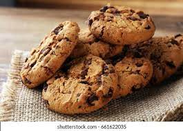

Chocolate Cookies

Chocolate cookies are a classic treat that's loved by many. Here's how to make them
Ingredients
- 1 cup (2 sticks) of unsalted butter, softened
- 1 cup of granulated sugar
- 2 large eggs
- 1 teaspoon of pure vanilla extract
- 2 cups of all-purpose flour
- 1/2 cup of unsweetened cocoa powder
- 1 teaspoon of baking soda
- 1/2 teaspoon of salt
- 2 cups of chocolate chips
Instructions
- Preheat your oven to 350°F (175°C) and line baking sheets with parchment paper.
- In a mixing bowl, cream together the softened butter and granulated sugar until smooth.
- Add the eggs and vanilla extract, and beat until well combined.
- In a separate bowl, whisk together the flour, cocoa powder, baking soda, and salt.
- Add the dry ingredients to the wet ingredients and mix until just combined.
- Stir in the chocolate chips to evenly distribute them in the dough.
- Drop spoonfuls of dough onto the prepared baking sheets, leaving space between each for spreading.
- Bake in the preheated oven for about 10-12 minutes, or until the edges are set but the centers are still soft.
- Remove from the oven and let the cookies cool on the baking sheets for a few minutes before transferring them to a wire rack to cool completely.
- Enjoy your delicious homemade chocolate cookies!